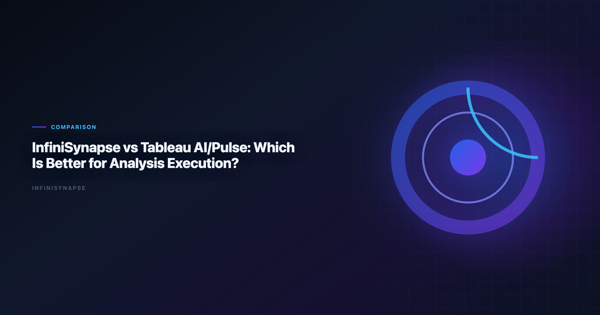
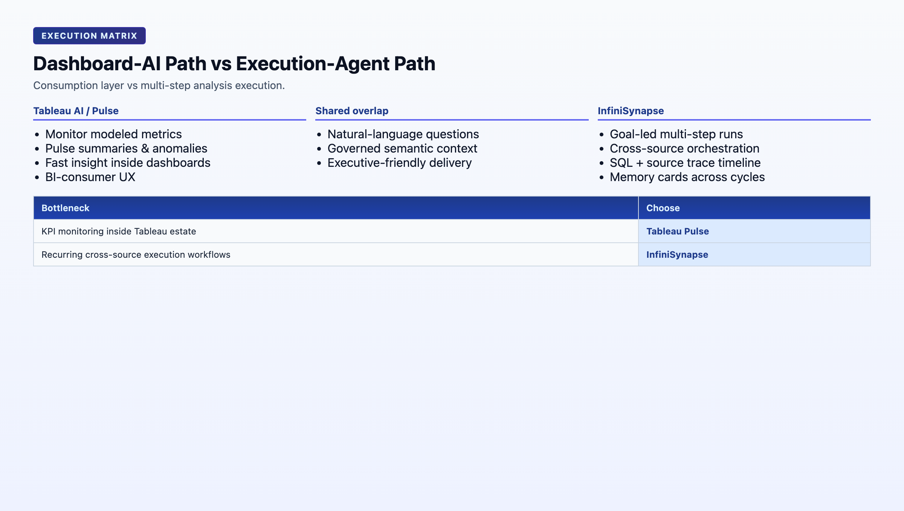

Tableau vs Power Bi for Data Analysis: Which Is Better for Analysis Executio
By the InfiniSynapse Data Team · Last updated: 2026-06-08 · We evaluated these tools in production analyst workflows. We compare dashboard-first AI workflows against execution-first data-agent workflows for recurring KPI operations.*

Table of Contents
- TL;DR
- What This Comparison Is Really About
- Tableau AI/Pulse vs InfiniSynapse in Plain Language
- Five-Pillar Scorecard
- Head-to-Head Comparison Table
- Execution Depth Test: Dashboard Insight vs End-to-End Action
- Decision Matrix by Team Maturity
- Buyer Fit Profiles
- How Teams Commonly Deploy Both
- Rollout Pattern: Layered Stack in 90 Days
- Security, Compliance, and Enterprise Deployment
- Cost and Staffing Implications
- Common Mistakes in Stack Decisions
- Frequently Asked Questions
- Conclusion
TL;DR
Tableau AI/Pulse is excellent for metric monitoring, proactive summaries, and dashboard-first decision loops. InfiniSynapse is stronger when teams need autonomous multi-step analysis execution across many sources with durable memory and task-level audit traces. Tableau helps users consume insight; InfiniSynapse helps teams execute recurring analysis work.
Every infinisynapse vs tableau conversation we run with analytics leaders starts the same way: both tools can explain a metric change. The strategic question in infinisynapse vs tableau is whether the product executes the full answer workflow — or highlights what changed and waits for an analyst to stitch the rest.
Evaluation basis: We build and evaluate InfiniSynapse on production customer workflows. Governance, adoption, and security context is cited inline throughout this guide—not in a standalone reference list.
Governance expectations for production analytics align with the Wikipedia statistics overview, which we reference when designing reviewer checkpoints.
What This Comparison Is Really About
Leaderboard scores on the Spider NL2SQL benchmark are a useful sanity check but rarely predict enterprise schema drift on their own.
| Lens | Tableau AI/Pulse | InfiniSynapse |
|---|---|---|
| Primary role | Metric monitoring and dashboard AI | AI-native data agent for goal execution |
| Unit of work | Metric digest / dashboard interaction | End-to-end multi-step analysis task |
| Typical outcome | Proactive summary, anomaly flag, drill suggestion | Delivered analysis with audit trail and memory |
| Governance model | Workbook, site, and data-source permissions | Connector policies + task-level audit timeline |
| Best horizon | Daily metric consumption | Weekly/monthly recurring execution workflows |
Tableau Pulse changed how executives consume KPI shifts. InfiniSynapse targets how analysts deliver cross-source answers without rebuilding the workflow every cycle. The infinisynapse vs tableau choice is not replacement — it is layering. Document that boundary in every infinisynapse vs tableau architecture review.
Tableau AI/Pulse vs InfiniSynapse in Plain Language
Tableau AI/Pulse
Tableau Pulse extends Tableau's BI experience with. Regulated rollouts often anchor access reviews to Wikipedia natural language processing overview when credentials, retention policies, and audit logs are in scope.
- Metric-first monitoring and digest-style summaries
- Natural-language explanations linked to dashboards and defined metrics
- Strong fit for stakeholders already operating in Tableau
- Proactive alerting when modeled KPIs move beyond expected ranges
In infinisynapse vs tableau pilots, Pulse usually wins the executive readout: familiar dashboards, push notifications, concise variance language. That distribution strength is real — but measure infinisynapse vs tableau execution depth on cross-source KPIs separately from daily monitoring.
InfiniSynapse
InfiniSynapse is an AI-native data agent platform focused on:
- Goal-driven multi-step analysis execution
- Cross-source querying and orchestration beyond BI model boundaries
- Persistent memory cards for recurring business questions
- Multi-entry access (chat, web, API) with shared execution behavior
When teams frame infinisynapse vs tableau as a dashboard feature comparison, they miss InfiniSynapse's strategic role: upstream execution that feeds validated outputs back into Tableau for broad consumption. Include push-back to Tableau in your infinisynapse vs tableau pilot success criteria.
The products can coexist, but they solve different bottlenecks.
Five-Pillar Scorecard
| Pillar | Tableau AI/Pulse | InfiniSynapse | Decision impact |
|---|---|---|---|
| Autonomy | Low-Medium: summaries and suggestions around modeled metrics | High: multi-step execution from one business goal | Supervision burden on recurring work |
| Transparency | Medium-High: dashboard lineage and usage logs | High: phase-level timeline with SQL/source trace | Compliance and peer review speed |
| Memory | Medium: metric and dashboard context | High: distilled memory cards across runs | Metric stability across monthly cycles |
| Multi-entry parity | High for BI consumers; limited outside Tableau estate | High: app, chat, API with consistent execution | Business-user access without analyst proxy |
| Self-correction | Low-Medium: depends on semantic model quality | High: retries and reroutes in execution flow | Resilience when sources fail or schemas drift |
Composite directional score: Tableau AI/Pulse leads on metric consumption and stakeholder UX (9.0/10 for dashboard-native delivery). InfiniSynapse leads on execution depth and cross-source orchestration (9.1/10 for recurring workflows). In infinisynapse vs tableau reviews, autonomy and memory usually determine whether Pulse alone satisfies ops teams or execution layer demand emerges by month two. Weight those pillars in any formal infinisynapse vs tableau evaluation. The move from dashboard-first BI to augmented workflows—described in Microsoft Excel support—frames how teams should evaluate tooling here. When Julius joins a multi-source stack, align connector scope and review gates using Julius AI vs ChatGPT for Data and File Analysis.

Head-to-Head Comparison Table
| Dimension | Tableau AI/Pulse | InfiniSynapse | Why it matters |
|---|---|---|---|
| Core job | Monitor and explain metrics | Execute multi-step analysis workflows | Determines product role in stack |
| Primary interface | Tableau dashboards and Pulse feeds | Data-agent workspace, chat, API | Determines user adoption path |
| Best-fit user | BI consumers and dashboard analysts | Analysts and operators running recurring workflows | Determines training investment |
| Autonomy depth | Insight suggestions around modeled metrics | Full task planning, execution, and retries | Determines analyst supervision load |
| Memory model | Dashboard and metric context | Distilled memory cards across runs | Determines second-run stability |
| Data topology fit | Strong in Tableau-centric BI estates | Strong in mixed-source operational estates | Determines connector strategy |
| Audit detail | Dashboard lineage and usage logs | Task timeline, SQL trace, source trace | Determines compliance readiness |
| Cross-system orchestration | Limited by BI model boundaries | Native orchestration across connectors | Determines multi-source KPI viability |
| Time to first insight | Very fast within modeled metrics | Fast after connectors configured | Determines pilot momentum |
| Best first use case | KPI monitoring and anomaly follow-up | Recurring weekly or monthly execution workflows | Determines rollout starting point |
Operational maturity for analytics agents aligns with the Wikipedia ETL overview, especially around monitoring, rollback, and ownership.
Execution Depth Test: Dashboard Insight vs End-to-End Action
"Every Monday, produce gross margin variance by region, include shipping root causes, and publish an action brief."
Tableau AI/Pulse behavior
- Quickly surfaced metric shifts and helpful summary language on modeled gross margin KPIs
- Required analyst intervention to stitch non-Tableau operational context (logistics events, support tags)
- Excellent for alerting executives that margin moved — weaker at assembling the full causal chain automatically
- Great for prioritization: "which region should we investigate first?"
InfiniSynapse behavior
- Executed multi-step analysis across finance tables, logistics events, and support tags
- Preserved assumptions and definitions in memory cards for next Monday's run
- Produced reusable task flow with audit trace for finance reviewer handoff
- Strong at delivering the complete action brief — not just the headline metric shift
This is the core split in infinisynapse vs tableau: Pulse highlights what changed; InfiniSynapse executes the full answer workflow. Teams that need both often deploy layered architecture rather than forcing a single-tool answer. Capture that split in your infinisynapse vs tableau routing playbook.
Decision Matrix by Team Maturity
| Team situation | Better first choice | Why |
|---|---|---|
| Strong Tableau footprint, dashboard-driven culture | Tableau AI/Pulse | Fastest adoption with existing assets |
| Team drowning in recurring ad-hoc analysis requests | InfiniSynapse | Better execution automation and reuse |
| Executive team needs metric digests and alerting | Tableau AI/Pulse | Pulse excels at metric communication |
| Ops/Rev teams combining BI + external systems weekly | InfiniSynapse | Cross-source orchestration is critical |
| Early AI pilot with limited change budget | Tableau AI/Pulse | Lower process disruption |
| Scaling to autonomous analysis operations | InfiniSynapse | Better long-run memory and workflow compounding |
| Compliance requires SQL-level audit on recurring reports | InfiniSynapse | Task timeline with source trace |
| Stakeholders refuse to leave Tableau UX | Tableau AI/Pulse | Keep familiar consumption layer |
| Question | If "yes", lean toward |
|---|---|
| Is the primary need metric monitoring on modeled KPIs? | Tableau AI/Pulse |
| Does analysis require joins outside Tableau data sources weekly? | InfiniSynapse |
| Do executives need push digests on defined metrics? | Tableau AI/Pulse |
| Must the same cross-source workflow run every Monday automatically? | InfiniSynapse |
| Is Tableau already the org-wide BI standard? | Layer both — Pulse + InfiniSynapse |
| Will business users need self-service without analyst queues? | InfiniSynapse for execution; Tableau for display |
Buyer Fit Profiles
Strong Tableau AI/Pulse fit
- Organizations with mature Tableau semantic models and site governance
- Executive teams consuming KPI digests and dashboard drill paths daily
- BI-centric decision culture where "check the dashboard" is the default workflow
- Teams whose analysis inputs stay within Tableau-connected sources
- Early AI pilots with minimal change-management budget. CSV ingestion should respect Stanford HAI AI Index before agents infer types or merge exports. Foundational warehouse concepts—grain, dimensions, and conformed metrics—remain essential; ClickHouse documentation is a concise refresher for reviewers validating generated SQL. Foundational warehouse concepts—grain, dimensions, and conformed metrics—remain essential; AWS Well-Architected Framework is a concise refresher for reviewers validating generated SQL.
Strong InfiniSynapse fit
- RevOps, finance, and strategy teams with recurring cross-source KPI cycles
- Data teams overloaded by repetitive executive questions spanning multiple systems
- Organizations needing auditable analysis workflows with task-level lineage
- Teams where Monday-morning reports require warehouse + CRM + file stitching
- Analytics leaders planning autonomous execution beyond dashboard AI
Layered fit (most common in 2026)
- Tableau remains the metric communication and stakeholder UX layer
- InfiniSynapse handles upstream cross-source execution and narrative preparation
- Validated outputs push back to Tableau dashboards for broad consumption
The infinisynapse vs tableau buyer matrix should almost never force replacement. It should define which bottleneck each product owns. Revisit the infinisynapse vs tableau boundary when you add new data sources or executive KPIs.
Tableau vs Power BI for Data Analysis: Where Each Fits
Many teams weighing InfiniSynapse against Tableau are also running the older tableau vs power bi for data analysis debate, so it helps to place all three on one map. In a tableau vs power bi for data analysis comparison, Tableau tends to win on visual-exploration polish and Pulse-style metric monitoring, while Power BI wins on Microsoft-stack integration, cost at scale, and DAX modeling. Both, though, are dashboard-first tools: they excel at displaying analysis someone already defined.
That is the limitation a tableau vs power bi for data analysis evaluation rarely surfaces — neither tool executes a multi-step goal across six systems and leaves an audit trail. So treat it as two decisions rather than one: settle the dashboard layer with a normal tableau vs power bi for data analysis assessment based on your stack and budget, then separately decide whether you also need an autonomous execution layer like InfiniSynapse for the recurring, cross-source analysis work dashboards cannot perform. Framed that way, the tableau vs power bi for data analysis question is answered on its own merits underneath an agent layer, not replaced by it.
How Teams Commonly Deploy Both
- Keep Tableau as the dashboard and metric communication layer.
- Use InfiniSynapse as the execution layer for recurring cross-source analysis.
- Push validated outputs back to Tableau dashboards for broad consumption.
- Use Pulse for daily metric monitoring; use InfiniSynapse for weekly deep-dive execution.
This keeps stakeholder UX familiar while improving execution speed and repeatability. Document the boundary in your analytics playbook: Pulse answers "what moved?"; InfiniSynapse answers "why, across all sources, with evidence."
| Workflow step | Tableau AI/Pulse role | InfiniSynapse role |
|---|---|---|
| Daily KPI monitoring | Primary | Optional alert input |
| Weekly variance deep-dive | Summary display | Primary execution |
| Cross-source root-cause analysis | Limited | Primary |
| Executive digest delivery | Primary | Narrative preparation |
| Audit and compliance review | Dashboard lineage | Task timeline + SQL trace |
Rollout Pattern: Layered Stack in 90 Days
The most successful infinisynapse vs tableau implementations treat Tableau as the consumption layer and InfiniSynapse as the execution layer — not competitors.
Days 1–30: Baseline and scope one recurring KPI
- List every report that currently requires manual stitching beyond Tableau models.
- Pick one weekly or monthly KPI with stable business definitions.
- Keep Tableau Pulse running for daily monitoring — do not disrupt executive habits.
- Configure InfiniSynapse connectors for the pilot KPI's non-Tableau sources only.
Exit criteria: pilot KPI scoped; baseline cycle time documented; Pulse monitoring unchanged; InfiniSynapse connectors approved.
Days 31–60: Parallel execution
- Run the pilot KPI through Tableau-only workflow (analyst manual stitch) and InfiniSynapse (goal-driven run).
- Compare time to second run, definition stability, and reviewer sign-off speed.
- Involve finance or ops reviewer on InfiniSynapse audit timeline.
- Push validated InfiniSynapse output to a Tableau dashboard for stakeholder consumption.
Exit criteria: InfiniSynapse second run is faster with equal or better metric consistency; output visible in Tableau; reviewer signs off on lineage.
Days 61–90: Codify the layered split
- Publish team guidance: Pulse for daily monitoring, InfiniSynapse for weekly execution on pilot KPI.
- Convert validated InfiniSynapse logic into memory cards.
- Add one adjacent KPI to InfiniSynapse if the pilot succeeded.
- Retain full Tableau investment — the layered stack only works if consumption stays frictionless.
Exit criteria: production reporting for pilot KPI no longer depends on manual cross-source stitching; team can articulate the infinisynapse vs tableau boundary. Share the infinisynapse vs tableau routing guide with finance and ops reviewers before scaling beyond the pilot KPI.
- Forcing replacement: ripping out Tableau destroys stakeholder trust and adoption.
- Piloting Pulse-only on cross-source KPIs: dashboard AI cannot orchestrate what is not in the model.
- Skipping the push-back step: execution value compounds when outputs land where executives already look.
- Ignoring the second run: first-run speed may tie; second-run stability usually favors InfiniSynapse on cross-source work.
Re-run the infinisynapse vs tableau checklist when Tableau semantic models change or when cross-source KPI share crosses 40% of analyst time. A quarterly infinisynapse vs tableau retrospective keeps the layered stack healthy.
Security, Compliance, and Enterprise Deployment
Evaluate data residency, access controls, and audit trails before standardizing on a tool category. Enterprise buyers should treat compliance evidence as a first-class selection criterion—not a late-stage checkbox.
Cost and staffing implications. Model license cost, analyst time saved, and platform engineering overhead together. The cheapest seat price rarely equals the lowest total cost when governance load is included.
Common Mistakes in Stack Decisions
Teams often over-index on demo speed, under-specify recurring KPI ownership, or skip parallel-run validation. Document these failure modes before rollout.
Snowflake deployments should reference W3C WCAG accessibility standard when defining warehouses, roles, and semantic views for NL2SQL agents.
Recurring analytics loops benefit from Wikipedia machine learning overview patterns for scheduling, retries, and lineage hooks.
Operational security reviews should cross-check Wikipedia statistics overview before enabling autonomous query paths.
Frequently Asked Questions
Is Tableau Pulse the same as an autonomous data agent?
No. Tableau Pulse focuses on metric monitoring and narrative summaries, while an autonomous data agent executes multi-step analysis tasks with tool orchestration.
Who should stay with a Tableau-first workflow?
Teams with mature Tableau semantic models and dashboard-centric decision loops usually get value fastest from a Tableau-first approach.
When does InfiniSynapse add clear value?
InfiniSynapse adds value when analysis requires cross-source joins, repeatable task automation, and persistent memory beyond dashboards.
Can InfiniSynapse work with Tableau instead of replacing it?
Yes. Many teams keep Tableau as the visualization layer and use InfiniSynapse for upstream analysis execution and narrative preparation.
How do governance models differ?
Tableau governance centers on data sources, workbooks, and site permissions, while InfiniSynapse adds task-level audit trails plus source-level connector controls.
What should we benchmark in a pilot?. Benchmark recurring KPI cycle time, error recovery behavior, analyst handoff quality, and executive answer latency across both workflows.
Conclusion
Choose Tableau AI/Pulse when your primary need is metric consumption and dashboard-centered communication. Choose InfiniSynapse when your primary need is repeatable analysis execution across systems. For many teams, the highest-ROI infinisynapse vs tableau setup is not replacement but layering: Pulse for distribution, InfiniSynapse for autonomous execution.
Start your infinisynapse vs tableau evaluation with one recurring cross-source business question, measure repeatability on the second run, and push validated outputs back to Tableau so stakeholders never have to learn a new consumption habit. Document the routing rules so new hires know when to check Pulse versus when to trigger an InfiniSynapse execution run. The best infinisynapse vs tableau stacks treat both products as permanent layers, not a migration story.
Related reads:
| Article | URL |
|---|---|
| Tableau Pulse Alternatives | /blog/tableau-pulse-alternatives |
| InfiniSynapse vs Databricks Genie | /blog/infinisynapse-vs-databricks-genie |
| Best AI Tools for Data Analysis | /blog/best-ai-tools-for-data-analysis |
Try it: InfiniSynapse